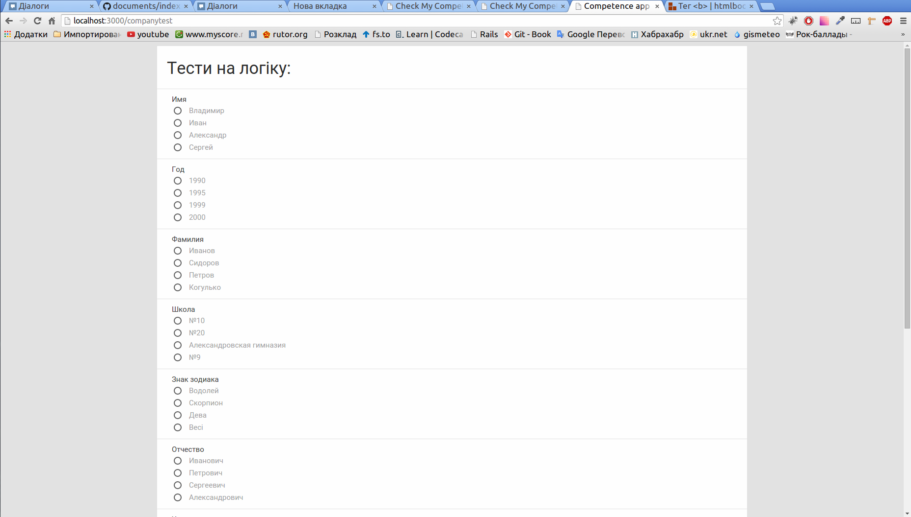
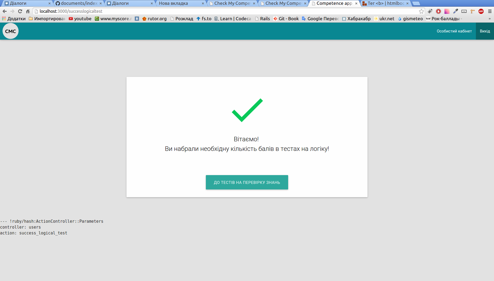
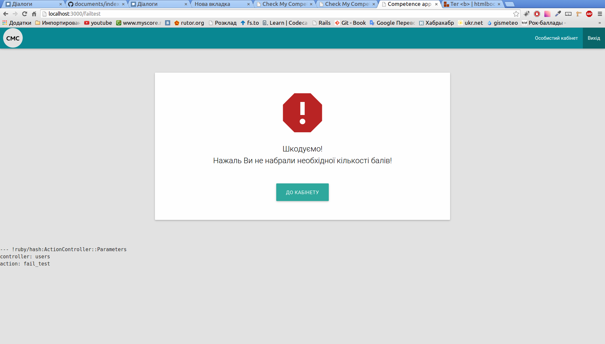
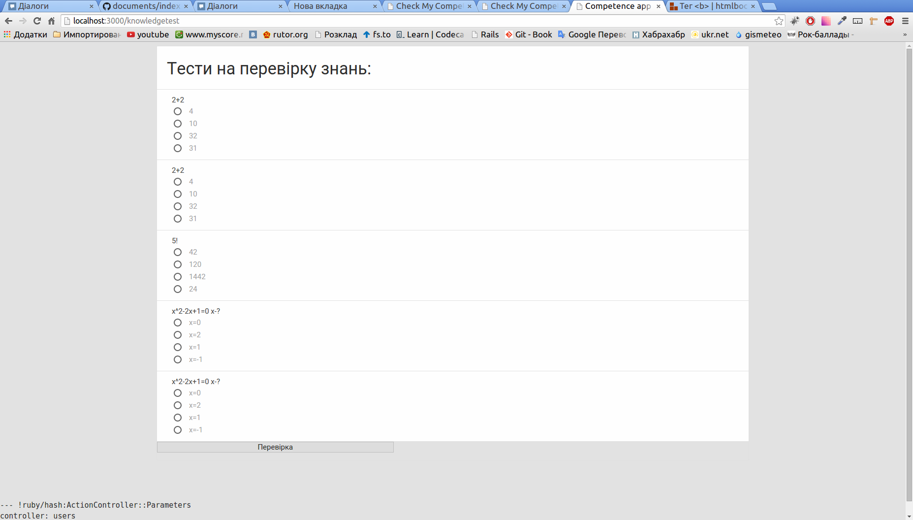
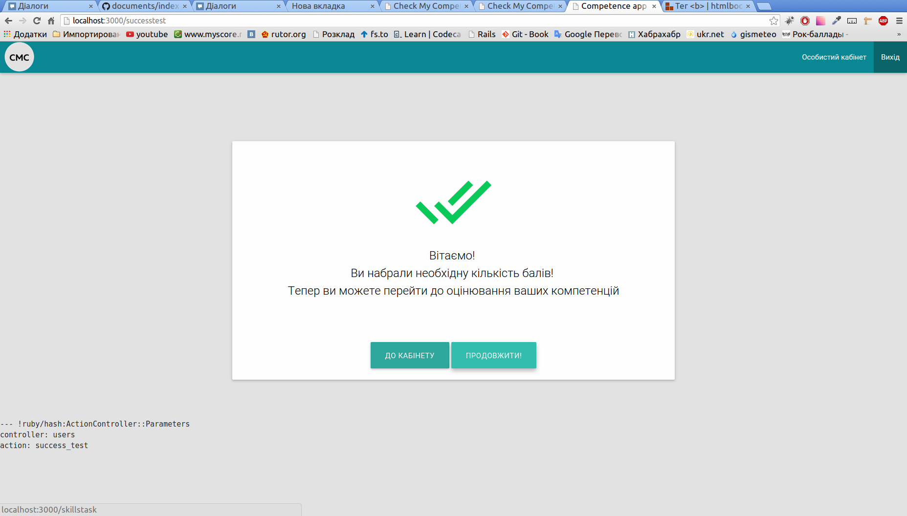
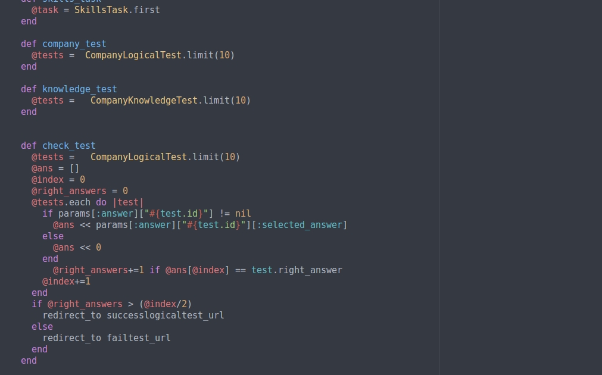

Завдання: Забезпечити коректну перевірку тестів при проходженні їх користувачем
На даному етапі нами були додані механізми перевірки тестів. Тестування поділяюєься на 3 етапи:
Тести на логіку
Тести на перевірку знань
Перевірка умінь
Спочатку користувач проходить тести на логіку.

Рис.1 Тести на логіку
Тести являють собою питання з 4 можливими варіантами відповіді.
Тестування вважається пройденим, якшо користувач набрав більше 50% правильних відповідей. Якщо користувач набрав необхідну кількість балів в поточному тестування,
він отримує відповідне повідомлення:

Рис.2 Повідомлення про успішне проходження тестів на логіку
Інакше користувач отримує відповідне повідомлення. І на цьому все тестування завершується.

Рис.3 Повідомлення про неуспішне проходження тестів на логіку
Якщо користувач набрав необхыдну кількість балів в тестах на логіку, то він переходить до перевірки знань.

Рис.4 Тести на перевірку знань
Так само в цьому випадку користувачу необхідно набрати 50% правильних відповідей. У цьому випадку користувач отримає повідомлення:

Рис.5 Повідомлення про успішне проходження тестів на перевірку знань
Все це забезпечається за допомогою наступного коду:

Рис.6 Функція перевірки тестів
Тут ( @test )- масив що зберігає в собі всі поточні тести. ( @answer[] ) - масив відповідей користувача на кожний тест.
( @index ) - лічильник відповідей користувача. ( @right_answers ) - лічильник правильних відповідей користувача на тести.
Мінімальна кількість правильних відповідей для проходження тестування - 50 % , що видно з умови ( @right_answers > (@index/2) )
У випадку успіху користувач потрапляє на сторінку підтвердження результату, а згодом до наступного етапу тестування. В іншому випадку користувач потрапляє на сторінку,
на якій вказано що він не набрав необхідну кількість балів, а після цього має змогу повернутися до свого особистого кабінету.